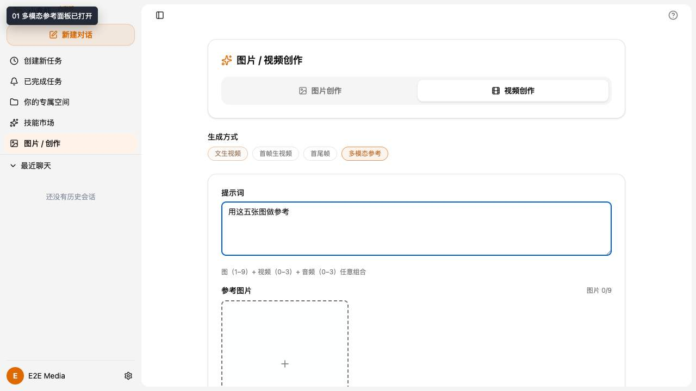
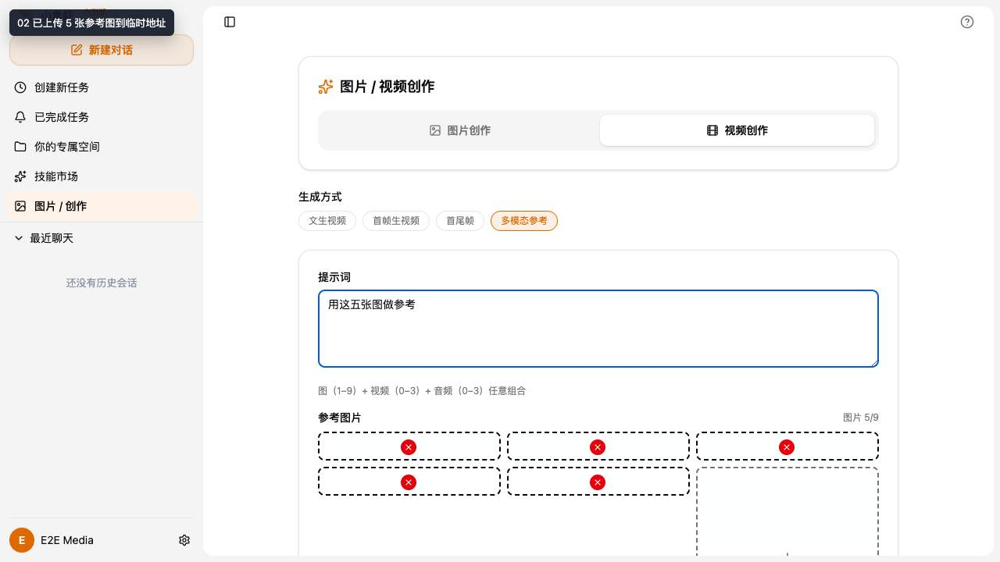
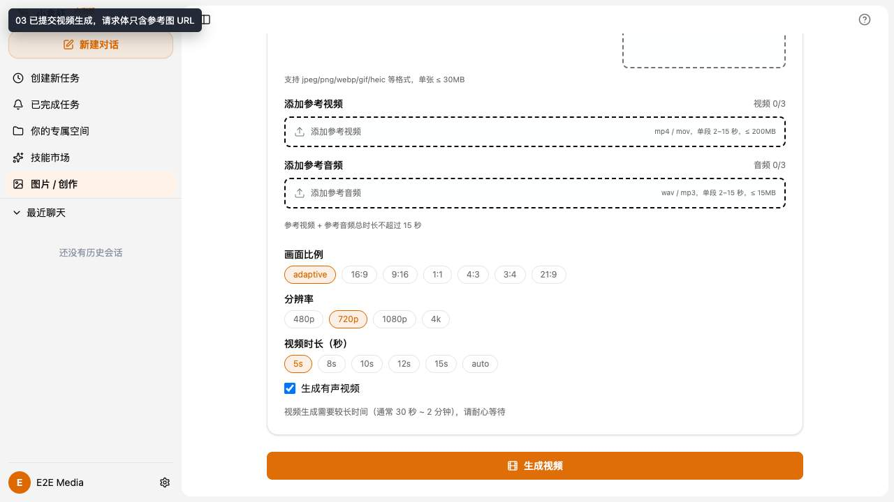

图生视频多参考图
mock 页面 E2E · evidence-report-mre8hloh-video-multiref-5-images
远端公开版
关键断言
- 参考素材进入临时 OSS 对象。
- 临时素材有效期为 7 天。
- 请求体使用 URL 引用，未携带 base64 图片。
截图



录屏
这份报告没有录屏文件。
公开版处理
- 未发布原始 network / WS / multipart 数据。
- 未发布访问凭证、个人标识、会话标识、容器标识。
- 页面只保留截图、MP4 录屏和可公开 proof 摘要。
查看脱敏 proof JSON
{
"slug": "mre8hloh-video-multiref-5-images",
"sourceReport": "evidence-report-mre8hloh-video-multiref-5-images",
"runId": "mre8hloh",
"class": "mock 页面 E2E",
"scenario": "图生视频多参考图",
"facts": [
{
"label": "Run ID",
"value": "mre8hloh"
},
{
"label": "类型",
"value": "mock 页面 E2E"
},
{
"label": "场景",
"value": "图生视频多参考图"
},
{
"label": "截图",
"value": 3
},
{
"label": "临时素材",
"value": "temp/media-refs/20260709/e2e-media-video/e2e-image-1.png"
},
{
"label": "有效期",
"value": "7 天"
},
{
"label": "Base64",
"value": "未使用"
}
],
"assertions": [
"参考素材进入临时 OSS 对象。",
"临时素材有效期为 7 天。",
"请求体使用 URL 引用，未携带 base64 图片。"
],
"counts": {
"screenshots": 3,
"videos": 0
},
"workspacePaths": [],
"redaction": [
"未发布原始 network / WS / multipart 数据。",
"未发布访问凭证、个人标识、会话标识、容器标识。",
"页面只保留截图、MP4 录屏和可公开 proof 摘要。"
]
}